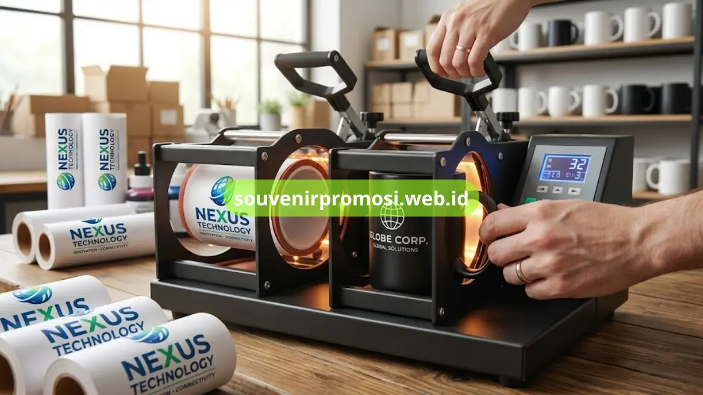

Poin Penting
- Mug keramik untuk souvenir promosi umumnya berbahan food grade dengan lapisan glasir glossy atau doff.
- Kapasitas standar mug keramik berkisar antara 300 hingga 400 mililiter.
- Teknik cetak logo yang umum dipakai adalah sublimasi dan cetak digital full color.
- Format file logo turut menentukan kualitas hasil cetak pada permukaan mug.
Daftar Isi
Pendahuluan
Spesifikasi mug keramik untuk souvenir promosi mencakup bahan keramik food grade, kapasitas sekitar 300 hingga 400 mililiter, serta pilihan teknik cetak logo seperti sublimasi dan cetak digital full color.
Kombinasi bahan dan teknik cetak ini menentukan hasil akhir logo pada permukaan mug serta daya tahan cetakan saat digunakan sehari-hari. Souvenir Promosi menggunakan bahan dan teknik cetak yang disesuaikan dengan jenis mug dan kompleksitas desain logo perusahaan.
Bahan Apa yang Digunakan pada Mug Keramik untuk Souvenir Promosi?
Mug keramik untuk souvenir promosi umumnya menggunakan bahan keramik food grade yang aman untuk kontak langsung dengan makanan dan minuman, dilapisi glasir glossy atau doff pada bagian luar. Bahan keramik ini dipilih karena permukaannya rata dan halus sehingga cocok untuk proses cetak logo dengan hasil warna yang tajam dan tidak mudah pudar dalam pemakaian normal.
Selain bahan dasar keramik, sebagian jenis mug seperti mug dengan tutup atau set mug dan tatakan menggunakan tambahan material seperti stainless untuk tutup atau kayu untuk tatakan. Kombinasi material ini memengaruhi tampilan akhir serta harga produk, sehingga perusahaan dapat memilih jenis mug sesuai anggaran dan kebutuhan tampilan souvenir promosi.
Teknik Cetak Logo Apa yang Tersedia untuk Mug Keramik?
Teknik cetak logo yang paling umum digunakan pada mug keramik adalah sublimasi, yaitu proses transfer tinta khusus ke permukaan mug menggunakan panas sehingga warna menyatu dengan lapisan keramik dan tahan lama. Teknik ini cocok untuk logo dengan banyak warna, gradasi, atau foto karena hasil cetakan tetap detail dan tidak mudah tergores.

Selain sublimasi, Souvenir Promosi juga menyediakan teknik cetak digital langsung untuk kebutuhan logo dengan desain sederhana atau warna terbatas. Pemilihan teknik cetak biasanya disesuaikan dengan kompleksitas desain logo, jumlah warna, serta jenis permukaan mug yang dipilih, baik glossy maupun doff.
Berapa Kapasitas dan Ukuran Standar Mug Keramik Custom Logo?
Kapasitas standar mug keramik untuk souvenir promosi umumnya berkisar antara 300 hingga 350 mililiter untuk jenis mug reguler, sementara mug keramik jumbo dapat memiliki kapasitas di atas 400 mililiter.
Ukuran ini memengaruhi luas area cetak logo, di mana mug berukuran lebih besar memberi ruang tambahan untuk mencantumkan tagline atau elemen desain lain selain logo utama.
Format file logo yang disarankan untuk proses cetak adalah file vektor atau file dengan resolusi tinggi agar hasil cetakan tetap tajam saat diperbesar menyesuaikan ukuran badan mug. Tim Souvenir Promosi dapat membantu menyesuaikan tata letak logo pada berbagai ukuran mug sebelum memasuki tahap produksi.
Kesimpulan & Pemesanan
Pemilihan bahan, kapasitas, dan teknik cetak logo yang tepat akan menentukan hasil akhir mug keramik custom logo sebagai souvenir promosi perusahaan. Souvenir Promosi siap membantu menyesuaikan spesifikasi mug dengan format dan kompleksitas logo perusahaan Anda.
Siapkan file logo perusahaan Anda dan kunjungi souvenirpromosi.web.id sekarang untuk konsultasi spesifikasi mug keramik custom logo dan pesan sekarang juga.